A first AI for curious minds
Ask. Look up. Carry on.
Zitro is the AI you ask and put down. One question, one answer — then it goes quiet. No feed, no account, nothing to scroll.
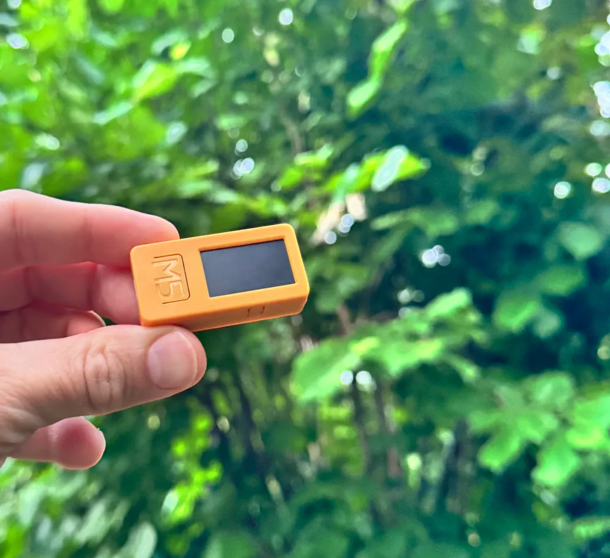
0 feeds·0 notifications·0 ads
it answers, then goes dark
Press
One button. It listens only while you hold the moment — never before, never after.
Ask
Any question, out loud, in your own language. Why is the sky blue? What's 12% of 340?
Look up
Read the answer — words, a graph, or a real photo. Then the screen fades, and the moment is yours again.
One quiet device,
four good reasons
A first AI that teaches judgment
Kids ask out loud, read the answer, and learn to check it. Sensitivity for what AI can and can't do — built through practice, not lectures.
Explore AI literacy For young adultsAI without a camera on your face
All the answers, none of the always-on glasses. Nothing you wear that films the room, records your friends, or reports to an account.
Compare the gadgets For screen detoxBe in the moment
One answer, then the screen goes dark. No feed to fall into, no notification pulling you back — the fact without the lost afternoon.
Read the detox story For creatorsFrom idea to paper
Generate images, steer stories, pull real photos — then print the keeper and pin it to the fridge. Answers that leave the screen entirely.
See what you can makeEveryday brilliance,
quietly delivered
Smart conversations
Ask your AI assistant anytime and get short, clear answers.
Instant answers
Quick, accurate responses without reaching for your phone or computer.
Family-friendly
A safe first step into AI for kids — learning its potential and its limits.
Ultra portable
Fits in your pocket, works anywhere you go.
Current model needs a WiFi connection.
Wikipedia photos
Real, attributable photos from matching articles — zoom and pan included.
Sources, not guesses
The AI only picks what to look up. 3D models, graphs and photos come from PubChem1, Wolfram Alpha2 and Wikipedia3.
The written answer still comes from the AI.
Surprise mode
Shake it for one delightful fact. Then it stops. That's the feature.
Image creation
Generate simple visuals for inspiration, right on the little screen.
Focused experience
A distraction-free interface designed for clarity — nothing pulls you back in.
Voice settings
Change any setting by speaking naturally. "Volume to 100" or "switch to English" — in German and English.
Timers & reminders
"Remind me in 90 minutes about the laundry." Alerts appear on screen, even from sleep.
Easy setup
Connect to the "zitro" WiFi and the settings page opens on your phone. Two minutes, no app.
Bilingual & beyond
Full interface in German and English. Displays text in 30+ languages including Greek, Cyrillic, and Hebrew.
Camera
Snap a photo and get kid-friendly AI analysis of objects and plants.
Requires optional M5 camera module.
Answers you can watch,
turn and play
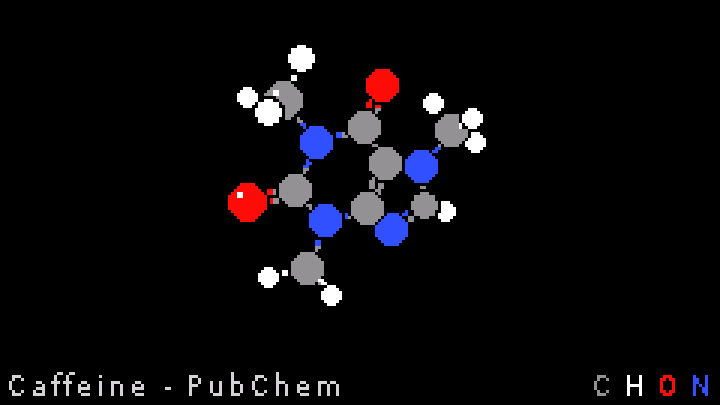
Molecules you can hold
Ask "How is caffeine built?" and the real molecule opens. Turn the stick to look around it.
3D data: PubChem1. No 3D record? You get a picture.
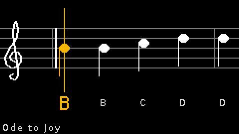
Music on an endless band
Say "Play Ode to Joy". Real notes scroll past and the stick plays them, one tone at a time.4
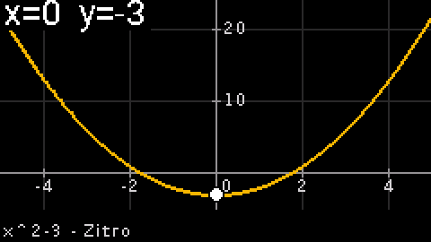
Curves, drawn sharp
"Draw x squared minus 3" gives a real graph made for this little screen. Tilt to walk along the curve.
Computed on the stick, exactly.
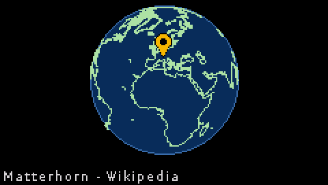
A globe in your hand
"Where is the Matterhorn?" Spin the globe with your hand and find the pin.5
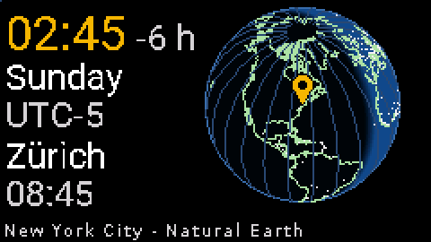
What time is it in Tokyo?
Ask, and the globe turns to the city: its time, your time, and where it's day or night right now.5
Zitro works the time out itself, summer time included.
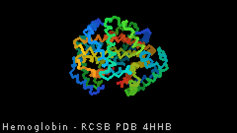
Enzymes, DNA, crystals
How is hemoglobin folded? What does salt look like up close? Turn real structures in your hand.6
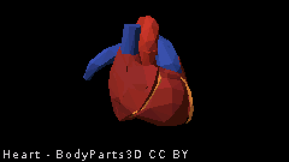
Organs and cells in 3D
Turn a real heart, brain or skeleton, and ask "What's inside?" to see it cut open.7 Cells are clearly marked as simplified.
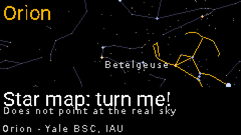
A sky you can turn
Ask about Orion and find it among 1,665 stars and all 88 constellations.8
A star map, not a window: the stick has no compass.
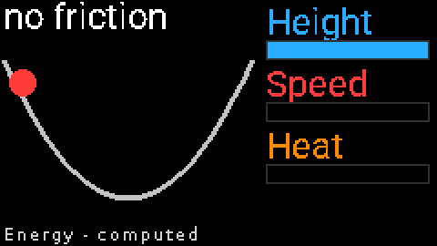
Physics you can watch
Levers, pendulums, prisms, the planets today, satellites and more: 27 scenes from first experiments to teenage physics, computed from the real equations.
Plus 17 geometric shapes with their faces, edges and corners.
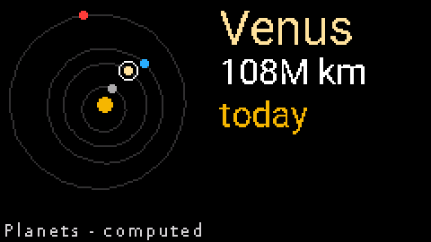
Space, computed
Where are the planets today? Why does Mars run backwards? Watch the ISS circle the Earth and follow the Sun's path over your home.13
Sped up or not to scale? The screen says so.
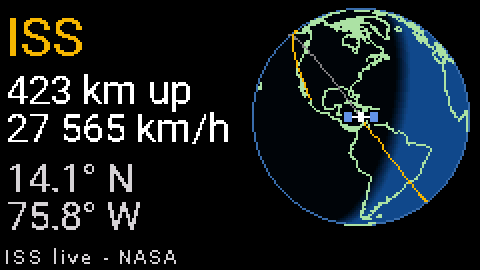
The ISS, live
"Where is the ISS?" Watch the space station cross the sunlit Earth right now, with its height, speed and path.14
NASA's own trajectory data, through zitro.spot. Needs WiFi.
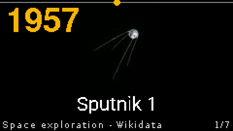
Timelines with pictures
"Show me the timeline of space travel." Step through history, with a real picture for each date.9
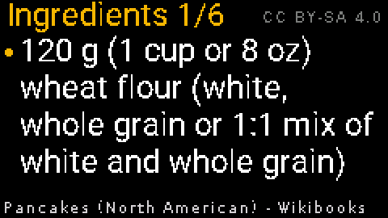
Cook it step by step
"How do I make pancakes?" Ingredients first, then one step per screen. Hot or sharp steps get an "ask an adult" mark.10
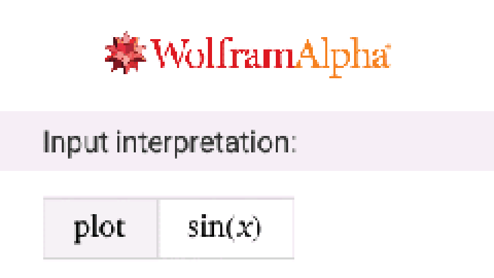
Math & science
Ask for a derivative or the square root of 144 and see a real formula, typeset for this little screen.
Experimental. Calculations: Wolfram Alpha2.
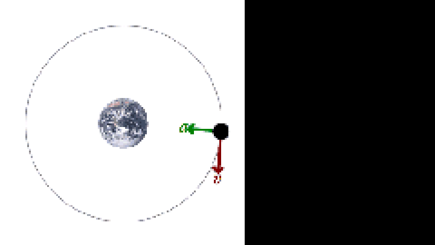
Pictures that move
Animated GIFs11 play right on the little screen, even while you scroll or zoom.
Very large GIFs stay still.
Print it for the school folder
Send a picture12 to your printer over AirPrint. "Half + text" adds the answer below it. Every page names its source.
Experimental. Works with some printers.
Built by Matthias
Hi, I'm Matthias, the creator of Zitro — a developer, a maker, and a father of three. Like most parents, I live the tension every day: I want to protect my kids from the overwhelming digital world, and at the same time I don't want to lock them out of it. They should grow up educated about AI — seeing its potential for creativity, knowledge, and agility, and learning its limits first-hand.
Zitro is my answer to that tension: a device that answers their questions and then hands the moment back. No feed, no account, nothing pulling them in deeper. Curiosity in, an honest answer out, and eyes back on the world.
It started as an experiment at the intersection of hardware and software — "what if your AI assistant could fit in your pocket and work anywhere?" — and turned into something my own kids reach for. I hope it brings your family as much joy and curiosity as it brings ours.
Open source
Zitro's firmware is open source and built in the open. Explore the code, contribute, or build your own.
View on GitHub ★ Loading...